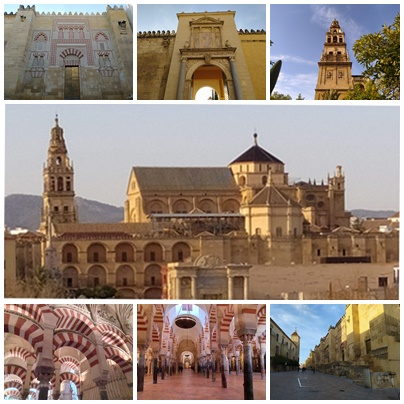
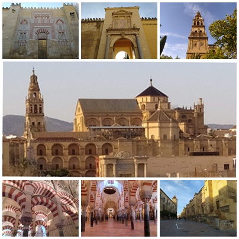

La mezquita de Córdoba
La mezquita de Córdoba
El centro histórico de la ciudad que se extiende alrededor de la Mezquita-catedral, ha podido conservar el encanto de aquellos tiempos. La judería, el antiguo barrio de la población judía, ofrece una multitud de tesoros arquitectónicos, callejuelas estrechas, así como rincones y plazuelas. Siendo la judería el barrio más importante de la ciudad, fue declarada íntegramente por la UNESCO, debido a su singularidad, como Patrimonio de la Humanidad. Desde siempre, la judería ha sido centro cultural e ideológico de Córdoba. El patio de la Mezquita servía a numerosos maestros de las distintas religiones que convivían en Córdoba para debatir sobre religión, ciencia, literatura y filosofía. Aquí también se ha podido conservar una de las tres sinagogas que hoy en día existen en España. A parte de la Mezquita-catedral y de la Sinagoga, se encuentran en esta zona varios de los monumentos más relevantes de la ciudad: los baños árabes encontrados en el Campo Santo de los Mártires, el Museo taurino o el zoco municipal.